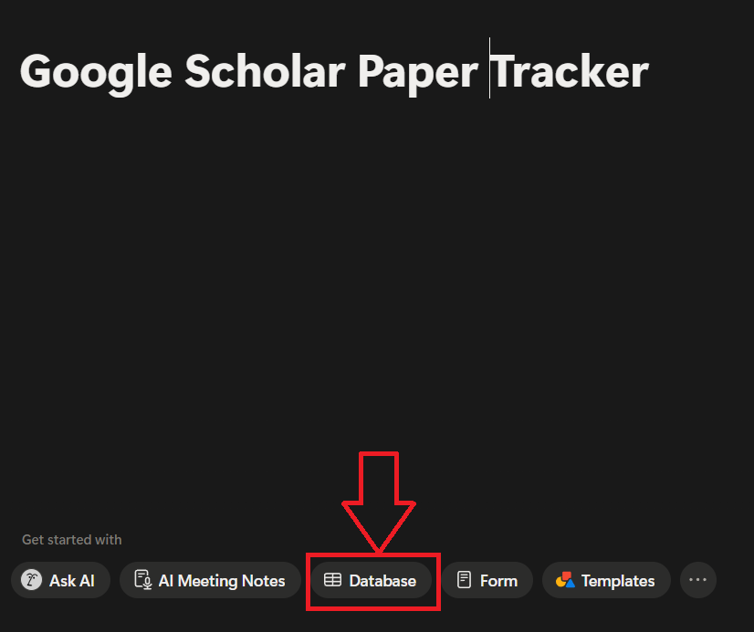
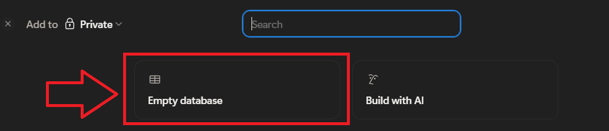
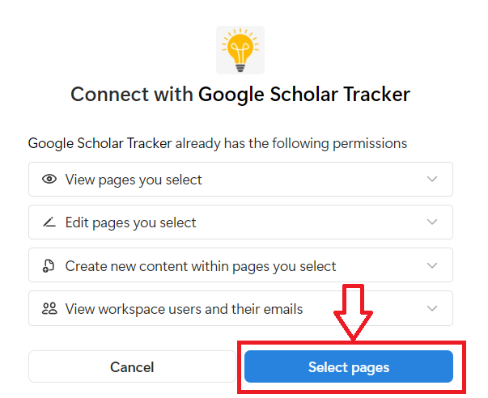
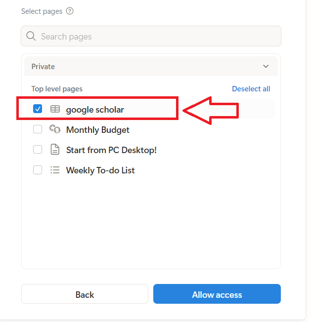
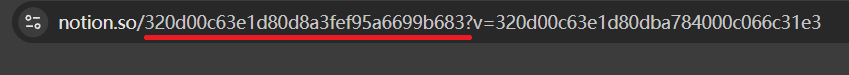
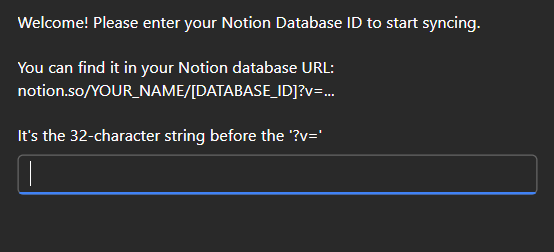

Step 1 of 6
Step 1 — Create a Notion page

In Notion, create a new page and click
Database from the options at the bottom.
Step 2 of 6
Step 2 — Choose Empty database

Select Empty database to create a blank database
for tracking your papers.
Step 3 of 6
Step 3 — Authorize the extension

Click Select pages to grant the extension access
to your Notion workspace.
Step 4 of 6
Step 4 — Select your database

Check the database you just created, then click
Allow access.
Step 5 of 6
Step 6 — Find your Database ID in the URL

Open your Notion database in a browser. The ID is the
32-character string in the URL. Copy it from your database URL for
the next step. before the
?v= part.
Step 6 of 6
Step 5 — Enter your Database ID

A prompt will appear asking for your Notion Database ID. Paste it
from your database URL as shown in the next step.